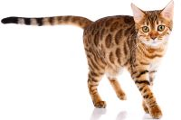

Czerwiec zaskoczył nas wyjątkowo wysokimi temperaturami, a to dopiero początek lata. Dlatego dziś chce Wam pokazać rozwiązania proponowane przez rynek zoologiczny. Producenci prześcigają się w wymyślaniu produktów, które mają ułatwić zwierzakom przetrwanie upalnych dni. Jedne z nich są bardziej trafne inne mniej. Zdecydowanie rekordy popularności biją maty chłodzące.
Na spacery najlepiej wybrać miejsce czyste, mało oblegane, gdzie kot nie będzie stresował się obecnością obcych ludzi i innych zwierząt. Szukajmy miejsc zielonych, urozmaiconych, z różnymi zakamarkami np. krzakami, które można eksplorować. Z dala od tłumów, psów, z dala od ruchliwej drogi. Warto upewnić się, że okoliczna roślinność jest bezpieczna, a podłoże czyste.
Nie jestem zwolenniczką przypinania kota i zostawiania go na dłuższy czas bez opieki. Po pierwsze dlatego, że pod naszą nieobecność może się uwolnić z szelek – i katastrofa gotowa. Po drugie, jeśli wyprowadzamy kota w nie do końca znanym nam miejscu, trzeba obserwować, co dokładnie podgryza i czy nie jest to trujące. Pilnujemy też, by zwierzak nie wyrządzał szkody środowisku naturalnemu – mam tu na myśli szczególnie polowanie na ptaki. Spacer to czas, który poświęcamy kotu i w tym czasie dbamy o jego bezpieczeństwo.
| Imie | Rasa | Wiek | Płeć |
|---|---|---|---|
| Mruczek | Brytyjski | 5 | Kot |
| Baku | Bengalski | 7 | Kotka |
| Pantera | Syjamski | 12 | Kotka |
| Tygrys | Ragdoll | 3 | Kotka |
|  | Koty rasowe i ich waga – sprawdź, ile powinny ważyć koty poszczególnych ras |
| W przypadku kotów rasowych łatwiej jest określić prawidłową wagę – jest ona bowiem zwykle jedną z cech charakterystycznych danej rasy. Wśród kocich arystokratów znajdziemy zarówno zwierzęta bardzo małe i lekkie, jak i takie, o których można powiedzieć, że faktycznie „swoje ważą”. | |